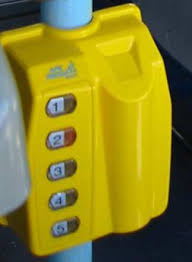
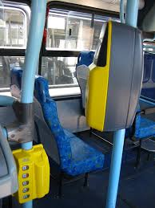

O teclado de seccionamento tarifário (ou seletor tarifário) é o equipamento que permite a cobrança de diferentes tarifas, nas linhas que possuem seccionamento tarifário, de acordo com as secções de origem e destino dos passageiros. Trata-se de um equipamento obrigatório nos veículos que operam linhas com diferentes seccionamentos tarifários, e deve se r instalado junto ao validador. O Operador também deverá afixar, no interior do veículo, tabela informativa com as diferentes tarifas cobradas, de acordo com a secção utilizada pelo passageiro. Uma vez selecionada a secção, será debitado do cartão do passageiro a tarifa correspondente ao seccionamento digitado no teclado.
Nas linhas que possuem seccionamento tarifário, o validador deve ser instalado em conjunto com o seletor tarifário (teclado), para possibilitar a cobrança da tarifa de acordo com a secção efetivamente utilizada pelo passageiro.
